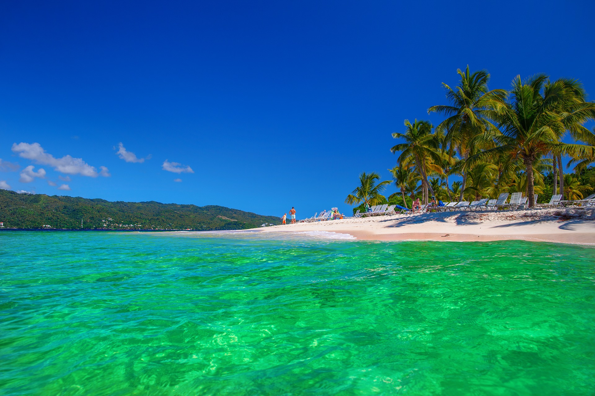
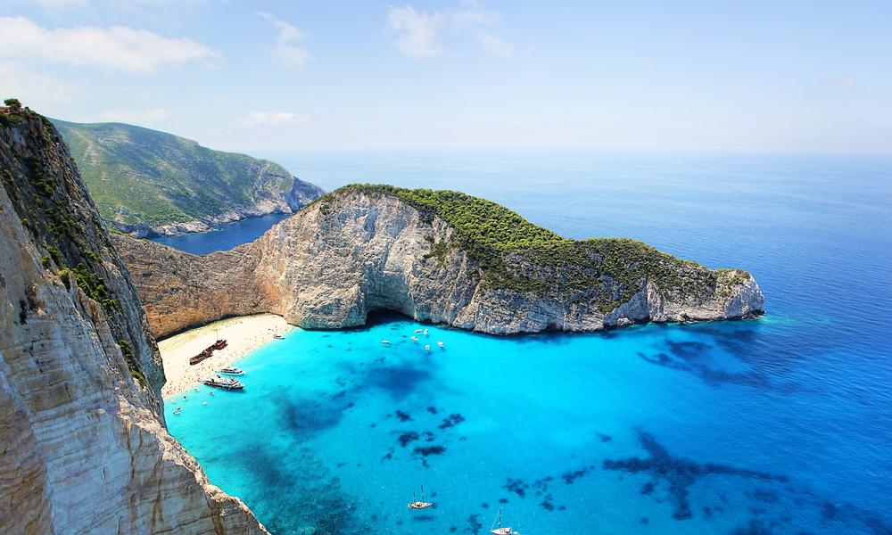
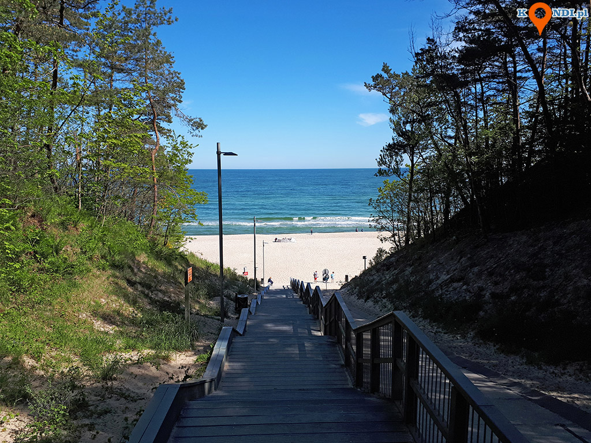
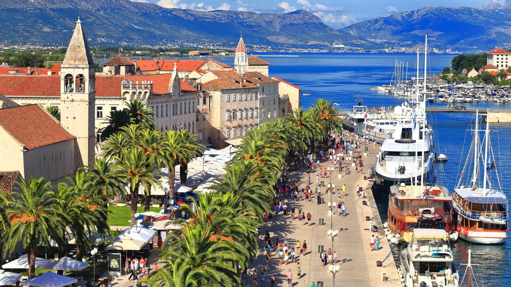
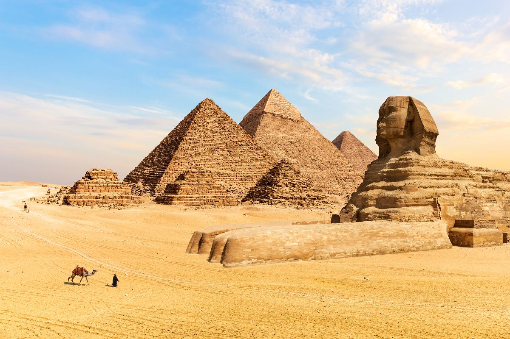

5 najlepszych miejsc na wakacje.
1. Egzotyka - Dominikana, Meksyk, Zanzibar
Marzenie o egzotycznych wakacjach towarzyszy wielu Polkom i Polakom. Takie kierunki to gwarancja znakomitej pogody, aksamitnego piasku,
 ciepłych wieczorów i pięknego błękitu mórz i oceanów. Szczególnie polecane są w okresie polskie zimy lub jesieni, ale wiele osób
wybiera się tam również w wakacje.
Kierunki egzotyczne to najczęściej lot samolotem trwający od 8 do 12 godzin. Na Dominikanę, do Meksyku czy na Zanzibar latają samoloty bezpośrednio z Polski,
co jest jedną z największych zalet tych miejsc. Jeśli chcemy egzotyki to najlepszą opcją w tym roku będą te miejsca, w które można polecieć
bezpośrednio z Polski.
Stąd propozycje takie jak Dominikana, Meksyk czy Zanzibar. Są to destynacje, do których można dolecieć bezpośrednio z Polski - zarówno kupując pakiet
przelot i hotel w biurze podróży, jak i decydując się na zakup samego biletu i nocleg we własnym zakresie.
2. Morze Śródziemne - Grecja, Malta, Hiszpania
Klasyka polskiego wypoczynku ostatnich lat - Grecja, Hiszpania. W tej ostatniej coraz bardziej przesuwamy się na Majorkę i Minorkę, 
a szczególnie na atlantyckie już Wyspy Kanaryjskie (Teneryfa, Fuertaventura, Gran Canaria). Wyspy to w ogóle znakomity pomysł na urlop.
Na samym Morzu Śródziemnym jest ich kilka tysięcy. Te turystycznie najpopularniejsze to greckie (Kreta, Rodos, Kos, Mykonos),
hiszpańskie (Minorka, Majorka) oraz Malta - szczególnie Malta wydaje się być atrakcyjnym kierunkiem turystycznym ze względu na
planowane rządowe dofinansowania dla turystów. Wszystkie te kraje utrzymują się w dużej mierze z turystyki.
Z wysp najciekawsze i najbardziej różnorodne wydają się te greckie. Największa z nich, Kreta, to różnorodność, której mogą pozazdrościć inne
obszary geograficzne. Znajdziemy tu plaże kamieniste, żwirowe, piaszczyste rodem z Karaibów. Do tego dużo historii, mitologii, a także świetna kuchnia.
O greckiej gościnności wspominać nie trzeba. A dodatkowo w tym roku Grecy są wygłodniali turystów i zrobią wszystko, byście poczuli się tu jak na najlepszych wakacjach w życiu.
3. Polska
Najbliżej, ale jednocześnie też chyba najciekawiej, bo wciąż zaskakuje. W tegoroczne wakacje opcji jest wiele, 
ale ciekawe wydają się z jednej strony miejsca
ciągle nieodkryte - jak choćby Roztocze, Kaszuby, Podlasie czy Wielkopolska. Interesującą opcją wydają się niewielkie pensjonaty, domy do wynajęcia w tych regionach.
Z drugiej strony Polska dysponuje coraz ciekawszą bazą większych hoteli, także nad morzem.
Jeśli więc wybieracie się na rodzinny urlop to w Polsce śmiało można znaleźć nieosiągalne jeszcze kilka lat temu hotele w stylu all inclusive, z basenami i animacją
dla dzieci. Naprawdę wakacje w Polsce mogą być znakomite.
4. Chorwacja, Czarnogóra, Albania
Jeśli chcemy pojechać za granicę, chcemy mieć gwarancję dobrej pogody i ciepłej wody w morzu, 
a dodatkowo chcemy skorzystać z własnego transportu samochodowego to ciekawą opcją wydają się Bałkany - szczególnie najbliższa Chorwacja.
Autem można również pojechać do Czarnogóry czy Albanii, ale to już dłuższa wyprawa.
Warto pomyśleć jednak o transporcie lotniczym. Bałkany to znakomite miejsce na urlop.
5. Egipt i Izrael
Klasyka polskiego wypoczynku to od lat Egipt. Jest to zróżnicowany kraj, który poza kurortami nad Morzem Śródziemnym (Hurghada, Sharm el Sheik)
oferuje też te nad Morzem Czerwonym (Marsa el Alam). W Egipcie mamy gwarancję pogody, a dodatkowo można nie tylko siedzieć na plaży czy nad basenem,
ale również zwiedzać (kto nie chciałby zobaczyć piramid).

Co ciekawe, pobyt w Egipcie można połączyć z wizytą w najbardziej gorącej obecnie destynacji na świecie - Izraelu. Jeśli zdecydujemy się na wyjazd nad
Morze Czerwone to stamtąd bardzo blisko jest do izraelskich zabytków i w ten sposób można odwiedzić Ziemię Świętą, a więc kolejną Mekkę turystów z całego świata.
To światowy lider szczepień, który już otworzył bary, restauracje i zabytki. To może być znakomity pomysł na wakacje.